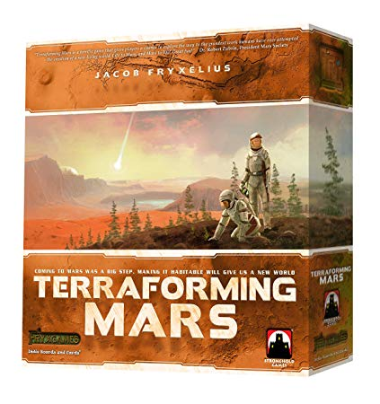

Five Tribes
Crossing into the Land of 1001 Nights, your caravan arrives at the fabled Sultanate of Naqala.
The old sultan just died and control of Naqala is up for grabs!
The oracles foretold of strangers who would maneuver the Five Tribes to gain influence over the legendary city-state.
Will you fulfill the prophecy? Invoke the old Djinns, move the Tribes into position at the right time and the Sultanate
may become yours!
Terraforming Mars
In the 2400s, mankind begins to terraform the planet Mars. Giant corporations, sponsored by the World Government on Earth, initiate huge projects to raise the temperature, the oxygen level, and the ocean coverage until the environment is habitable. InTerraforming Mars, you play one of those corporations and work together in the terraforming process, but compete for getting victory points that are awarded not only for your contribution to the terraforming, but also for advancing human infrastructure throughout the solar system, and doing other commendable things.